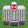
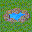

(島の名前をクリック)
↓
(観光画面)

箱庭諸島２の説明(初級編)
まず、重大な注意があります。 参加にあたって、パスワードを設定する必要がありますが、 当方ではセキュリティ関係の責任は持てません。 従って、ばれても平気な無難なパスワードを使用してください (例:生年月日とか、あだ名とか)。
とりあえずこのページを読むと、「箱庭諸島２」を始めることが できるはずです。 操作方法がだいたいつかめたら、このページの後に 中級編の方へ進んでみてください。 もっと細かい情報を知りたい場合には、上級編も 用意してあります。
「箱庭諸島2」は、一人ひとつの島を持ちその島を開発していくという、 いわゆる箱庭系のゲームです。 ただひたすら開発するだけでなく、お互いに協力しあったり、 戦争したりもするかもしれません。
開発計画(農場を作ってみたり、荒地を整地したり)は20ターン分まで 先行入力できます。1ターン1回の計画が実施されます。 なお、1ターンは6時間(つまり1日4ターン) なので、計画をあらかじめ20個入力しておけば、 5日間はアクセスしなくてもいいわけです。
もちろん不測の事態がいろいろと発生するので、 頻繁にアクセスした方が有利ですが。 なお、計画が入力されていない状態で1週間(28ターン)放っておくと、 島が放棄されてしまいます。
他の参加者が開発している島も「観光」という名目で見に行く事が できます。 これは自分の島を持っていない人でもできるので、 雰囲気を知るために見てみてはどうでしょう。 ゲームのトップページにある島のリストで、島の名前をクリックすると見に行けます。
(島の名前をクリック)
↓
(観光画面)
このゲームには「こうなったら勝ち」という条件はありません。 ただ、島の人口による順位が表示されるので、 その上位を目指すのが一応の目的となります。
もちろん、順位など気にせずにのんびり開発するのもありです。 「のんびり」と言っても、災害をはじめとする数々の困難が 待ち構えているので、そう簡単には行きませんが・・・
自分の島を登録するには、ゲームのトップページにある、 「新しい島を探す」の所に、島の名前とパスワード を入力し、「探しに行く」ボタンを押します。

すると、島が発見されます。

そして「トップへ戻る」を押してトップページに戻ると、 あなたの島が登録されています。

ところで、島の名前に(28)とか数字がついていますね。 この数字は、島が放置されていた期間を表します。 あなたが発見するまで、ずっと放置されていたのです。
28ターン以上放置すると自動的に放棄になってしまうので、 そうならないためにみもさっそく開発計画を入力しましょう。
自分の島へ開発計画を入力しに行くには、 島の名前をクリックしてもダメです。 それではただの観光者扱いになってしまいます。
オーナーとして島に行く場合は、ゲームのトップページの最初の方にあった、 「自分の島へ」の所で島を選び、パスワードを入力し、 「開発しに行く」ボタンを押します。

(「開発しに行く」ボタンを押す)
↓
(開発画面へ)

開発画面の構成はこんな感じです。

真ん中のやつは見てのとおり地図です。 各ヘックス(マスのこと)が何を表しているか、 そのヘックス位置の座標はいくつか、という情報は ヘックスの上にマウスポインタを置くと表示されます。
ここには、自分の島全体の数値的なデータが表示されます。 特に、資金や食料には注意しなければなりません。 資金がないと何もできないし、食料が0になると 人がどんどん減っていってしまいます。
1番から20番まで、すでに予定されている計画が表示されています。 ターンが進む毎に、1番から順番に実行され、順繰りに上に詰められて行きます。
ここを利用して計画を入力します。 それぞれの要素について説明します。
これから入力する計画が何番目に実行される計画かを指定します。 (入力済み計画欄の番号をクリックする事でも番号を指定できます)。
実行する計画の種類を指定します。 農場整備とか整地とか、いろいろ種類があります。 それぞれの意味については後ほど。
実行する計画を、どの座標のヘックスに対して行うかを指定します (地図上のヘックスをクリックする事でも番号を指定できます)。 農場整備とか行う場合には、「どこに作んの？」って 情報が必要ですね (指定する必要のない計画もあります。資金援助とか)。
計画によっては、「量はどのくらい？」という事を指定できます。 その場合、この数量欄を指定できます。 例えば、資金援助などは、「いくら援助すんの？」という情報 が必要なわけです。
たいていの計画は自分の島に対して行うんですが、 他の島に対して実施する計画もあります。例えば資金援助などです。 この場合、相手の島の名前を指定する事になります。
通常は挿入になっていて、計画を指定した番号の位置に挿入します。 でも、「その番号にある計画を上書き」したかったり、「削除」したい場合には それらを指定します。
このボタンを押すと、指定した計画が入力されます。
以上、ちょっと複雑に見えるかもしれませんが、要するに 計画を指定して、計画送信ボタンを押すだけです。
続いて、地図にある要素や計画の種類、 また島を襲う災害などの事を簡単に説明した後、 「序盤はいったい何をやったらいいのか」を説明したいと思います。
島の地図は12×12ヘックスで構成されます (地形１マスのことをヘックスと呼びます)。 地形には次のような種類があります。 なお、ゲーム画面上では、そのヘックスの上にマウスを置いてしばらく待つと、 その地形の座標と種類を知ることができます。
以下に、地形の一覧を示します。
| 海 |  |
普通の海と浅瀬があります。 このままでは役に立ちませんが、埋め立てをして陸地にする事ができます。 |
|---|---|---|
| 湖 | １へックスの普通の海や浅瀬を陸地で囲むとできます。また湖が海に隣接すると自動的に海に戻ります。 | |
| 荒地 |  |
役にたたない土地ですが、整地をすると平地に することができます。砂地に変化することもあります。 |
| 砂地 | 役にたたない土地ですが、整地をすると平地に することができます。ほっておくと周りの平地や荒地が砂地に変化します。 | |
| 平地 | 平地には、農場や工場などを作ることができます。 また、周囲に 農場、村、町、都市などがあると、 平地に村ができることがあります。 | |
| 村 | 100〜2900人の人が住んでいます。 村の人口は自然に増えて行きます。 3000人になると町に昇格。 | |
| 町 | 3000人〜9900人の人が住んでいます。 町の人口も自然に増えます。 10000人に到達すると都市に昇格です。 | |
| 都市 |  |
10000〜20000人の人が住んでいます。 都市の人口は自然には増えません・・・でも なんらかの理由で増える事もあります。 |
| 森 |  |
森は、農場を風から守ったり、
まわりの都市に安らぎを与え火災を防いでくれます。 いざという時には木を伐採して売ることもできます。 また木の本数が２万本になると周りの平地に派生していきます。また周りの荒地を平地に変える力も持っています。 |
| 防波堤 | 津波で壊されない唯一の地上建築物です。 | |
| 港 | 食料輸出や食料援助など島外と貿易をするのに必要な施設です。 | |
| 浄水場 |  |
都市や町、村などに水を供給します。 水の供給が足りないと都市の人口が減り続けます。 |
| 火力発電所 |  |
工場、採掘場などに電気を供給します。 電気の供給が足りないと工場や採掘場が動きません。 |
| 太陽光発電所 | 工場、採掘場などに電気を供給します。 電気の供給が足りないと工場や採掘場が動きません。 | |
| 風力発電所 | 工場、採掘場などに電気を供給します。 電気の供給が足りないと工場や採掘場が動きません。 | |
| 水力発電所 | 工場、採掘場などに電気を供給します。 電気の供給が足りないと工場や採掘場が動きません。 | |
| 地熱発電所 | 工場、採掘場などに電気を供給します。 電気の供給が足りないと工場や採掘場が動きません。 | |
| 波力発電所 | 工場、採掘場などに電気を供給します。 電気の供給が足りないと工場や採掘場が動きません。 | |
| 電力売買公社 | 発電所などで発電した電気が余った場合、この施設があると自動的に電気が島外に売られ、収入を得ることができます。 また島で電気が足りないとき、この施設があると自動的に島外から電気を調達することができます。電気は1000KWにつき2億円で売買されます。 | |
| ゴミ処理場 |  |
都市や町、村から出るゴミを処理します。 ゴミを処理しないとゴミはたまり、島から人が出ていってしまい、人口が減ります。 | ゴミ輸出機構 | ゴミが処理しきれなくなったとき、ゴミを輸出してしまいます。 ゴミ１トンにつき10億円の費用がかかります。これを建設する前によくよくご検討をする事をおすすめします。 |
| 農場 |  |
ドーム型の全天候型農場です。 ここで10000人が働くことができます。 農場で人が働くと、食料が生産されます。 |
| 養殖場 | 海上の全天候型養殖場です。 ここで10000人が働くことができます。 養殖場で人が働くと、食料が生産されます。 | 牧場 | 全天候型ではない牧場です。 ここで1000人が働くことができます。 牧場で人が働くと、少ない人数で大量の食料が生産されます。 |
| 工場 |  |
工場では最大200000人が働くことができます。 工場で人が働くと、資金を得ることができます。 |
| 採掘場 |  |
採掘場では最大200000人が働くことができます。 採掘場で人が働くと、資金を得ることができます。 |
| 動物園 | 動物園は労働者を必要とせずに収入を得ることができます。 しかし10000万トンの食料が毎ターン必要です。 | |
| デパート |  | デパートはその島の人口の大きさによって得られる収入が違います。 ちなみにこの物件も労働者を必要としません。 |
| 銀行 | 銀行は毎ターン出資額の５%が収入として入ります。。 ちなみにこの物件も労働者を必要としません。また、銀行の位置は機密なので、観光者には森にしか見えないように偽装されています。 | |
| 温泉 |  | 温泉は毎ターン島の面積の１／１００が収入として入ります。。 ちなみにこの物件も労働者を必要としません。 |
| 釣り堀 | 検討中 | |
| 山 |  |
山には採掘場を設置することができます(5000人働けます)。 採掘場で人が働くと、資金を得ることができます。 |
| これがないとミサイル発射や怪獣派遣、強奪、ST強奪は実行できません。 また低収束レーザー砲も動きません。 しかし防衛基地類はこれがなくても作動します。 また、軍総司令部の位置は機密なので、 観光者には森にしか見えないように偽装されています。 | ||
| 防衛施設 |  |
防衛施設があると、周囲2へックス以内に飛んできたミサイルは、 施設の発する見えない力場により無力化されます。 しかし、防衛施設自身は、自分を守る事も、 他の防衛施設に守られる事もできません。 |
| ST防衛施設 | |
防衛施設があると、周囲2へックス以内に飛んできたミサイルは、 施設の発する見えない力場により無力化されます。 しかし、防衛施設自身は、自分を守る事も、 他の防衛施設に守られる事もできません。この防衛基地は常にホログラムによって観光者には森にしか見えないようにしてあります。 しかし自爆装置がセットされるとホログラムが解除さるため、観光者にも見えるようになってしまいます。 |
| 広域防衛施設 | 広域防衛施設があると、周囲3へックス以内に飛んできたミサイルは、 施設の発する見えない力場により無力化されます。 しかし、広域防衛施設自身は、自分を守る事も、 他の防衛施設に守られる事もできません。 |
実は、これで全部ではありません。 でも当面は必要がないので、残りは中級編へ譲ります。
開発計画は、「自分の島へ」で島の地図を表示 させたときに、地図の左側にある計画入力欄から入力することができます。 すでに入力済みの計画は、地図の右側に表示されます。
計画は、 計画番号、 開発計画の種類、 座標、 目標の島、 数量などを選択し、 計画送信ボタンを押すと登録されます。
登録された計画は、計画番号の小さい順に実行されます。
座標だの数量などいろいろあって複雑ですが、 必ずしもすべての要素が必要なわけではありません。 どの開発計画にどの要素が 関係するかは、下の一覧表に書いてあります。
また、ブラウザによっては、自分の島の地図で 目的の位置をクリックするとその座標が座標のリストボックス にセットされます。また、地図の右に表示されている計画をクリックすると、 計画番号のリストボックスに対応する番号がセットされます。
開発計画には以下のようなものがあります。
| 開発計画 | 説明 | |
|---|---|---|
| 資金繰り | なし | 特に開発は行いませんが、10億円を工面することができます。 この計画を行っている間は、島を放置していると見なされます。 |
|
| 座標 |
整地により、荒地や砂地などを平地にすることができます。
荒地以外でも、いらなくなった農場など
陸地にある建造物を処分するのにも使えます。 |
| 埋め立て(150億円) | 座標 | 海を埋め立てて浅瀬にすることが出来ます。 また、浅瀬を埋め立てて陸地を作れます。 ただし、まわりに陸地がないと実行できません。 |
| 海上撤去(20億円) | 座標 | 海にある油田や養殖場を撤去します。 |
| 伐採(無料) | 座標 | 森の木を伐採し、売ります。 木100本につき5億円で売れます。 |
| 植林(50億円) | 座標 | 平地に森を作ります。 |
| 港整備(30億円) | 座標 | 海（浅瀬不可)に港を作ります。 |
| 浄水場整備(100億円) | 座標 | 平地に浄水場を作ります。 |
| 火力発電所整備(100億円) | 座標 | 平地に発電所を作ります。 |
| 太陽光発電所整備(1000億円) | 座標 | 平地に太陽光発電所を作ります。 |
| 風力発電所整備(10億円) | 座標 | 平地に風力発電所を作ります。 |
| 水力発電所整備(1500億円) | 座標 | 山に水力発電所を作ります。 |
| 地熱発電所整備(800億円) | 座標 | 山の周囲の平地に地熱発電所を作ります。 |
| 波力発電所整備(1000億円) | 座標 | 浅瀬に波力発電所を作ります。 |
| 電力売買公社建設(5000億円) | 座標 | 平地に電力売買公社を作ります。 |
| ゴミ処理施設整備(100億円) | 座標 | 平地にゴミ処理施設を作ります。 |
| ゴミ輸出機構建設(10000億円) | 座標 | 平地にゴミ輸出機構を作ります。 |
| 防波堤整備(160億円) | 座標 | 浅瀬に防波堤を作ります。 |
| 農場整備(20億円) | 座標 | 平地に農場を作ります。 |
| 養殖場整備(100億円) | 座標 | 浅瀬に養殖場を作ります。 |
| 牧場整備(500億円) | 座標 | 平地に牧場を作ります。 |
| 工場建設(100億円) | 座標 | 平地に工場を作ります。 |
| 釣り堀整備 (100億円) |
座標 | 湖に釣り堀を作ります。 |
| 動物園建設 (700億円) |
座標 | 平地に動物園を作ります。 |
| デパート建設 (1000億円) |
座標 | 平地にデパートを作ります。 |
| 銀行建設 (1000億円) |
座標 | 平地に銀行を作ります。 |
| 温泉掘削 (200億円) |
座標 | 平地に温泉を作ります。 |
| 採掘場整備 (300億円) |
座標 | 山に採掘場を作ります。 |
| 軍総司令部建設 (100億円) |
座標 | 平地に軍総司令部を作ります。 |
| ミサイル基地建設 (300億円) |
座標 | 平地にミサイル基地を作ります。 |
| 防衛施設建設(1000億円) ST防衛施設建設(1500億円) 広域防衛施設建設(3000億円) |
座標 | 平地に防衛施設,ST防衛施設建設,広域防衛施設建設を作ります。 |
| 資金借り入れ | 座標、数量 | 資金を借り入れします。 数量を指定すると、数量×100億円借りることができます。 数量を0に設定すると最高額を借り入れることになります。 最高額は10000億円です。 借りたお金の返済方法は10回払い、50回払い、100回払いがあります。 借りた次のターンから返済が始まります。 これを行ってもターンは進まないので、得た資金を同じターン中に 使うこともできます。 |
|
食料輸出 (10000トン) |
座標、数量 | 食料を売却します。10000トンにつき10億円で売れます。 数量を指定すると、数量×10000トン売ります。 これを行ってもターンは進まないので、得た資金を同じターン中に 使うこともできます。 |
|
食料輸入 (10000トン) |
座標、数量 | 食料を購入します。10000トンにつき10億円で買えます。 数量を指定すると、数量×10000トン買います。 これを行ってもターンは進まないので、得た資金を同じターン中に 使うこともできます。 |
|
石油輸出 (10トン) |
座標、数量 | 石油を売却します。10トンにつき10億円で売れます。 数量を指定すると、数量×10トン売ります。 これを行ってもターンは進まないので、得た資金を同じターン中に 使うこともできます。 |
|
石油輸入 (10トン) |
座標、数量 | 石油を購入します。10トンにつき10億円で買えます。 数量を指定すると、数量×10トン買います。 これを行ってもターンは進まないので、得た資金を同じターン中に 使うこともできます。 |
|
資金援助(100億円) 石油援助(10トン) |
座標、数量、目標 | 他の島に資金（石油)(食料)を援助します。 このコマンドだけではターンは進みません。 数量を指定すると、数量×100億円(10トン)(10000トン)援助します。 |
|
|
座標、数量、目標 | 他の島にごみを輸送します。 このコマンドだけではターンは進みません。 数量を指定すると、数量×100トン輸送します。 |
|
ミサイル発射(20億円) 低精度ミサイル発射(15億円) 簡易ミサイル発射(10億円) PPミサイル発射(50億円) STミサイル発射(50億円) |
座標、数量、目標 |
目標の島へ、
ミサイルを発射します(ミサイル基地、または海底基地が必要です)。
誤差が激しく、目標地点から2hex以内のどこかに落ちます。
数量を指定すると、その数だけ撃ちます(費用はそのぶんかかります)。
数量を0に指定すると、撃てるだけ撃ちます。 ミサイルは11種類ありますが、特徴は次のとおりです。 ミサイル→普通のミサイル 簡易ミサイル→時々、軌道をそれ、違う島に落ちます。 低精度ミサイル→誤差が3ヘックス PPミサイル→誤差が1ヘックス STミサイル→誰が撃ったか表示されない 核ミサイル→着弾点付近が壊滅 中性子ミサイル→着弾点付近の都市や農場などが壊滅 陸地破壊弾→着弾点の陸地が水没 陸地生成弾→着弾点の陸地が隆起 怪獣捕縛弾→怪獣を捕縛。怪獣以外の地形に当たった場合はミサイルと同じ。 体力増強ミサイル→怪獣の体力を増強。怪獣以外の地形に当たった場合はミサイルと同じ。 |
アンチシールドミサイル→防御衛星や防衛施設、古代シールド兵のバリアをすり抜けることができるミサイル。
| 島の放棄(無料) | なし | 島を放棄します。やめるときは必ず入力しましょう。 |
計画の種類は、これで全部ではありません。 しかし当面は必要がないので、残りは中級編へ譲ります。
ちょっと複雑ですが、重要です。
住民は、働く場所(農場、工場、採掘場)さえあれば、 勝手に働いてくれます。 住民が働くと、食料や資金を得ることができます。
100人が農場で働くと、1ターンあたり100トンの食料を得ることができます。 1000人が工場や採掘場で働くと、1ターンあたり3億円の資金が得られます。
働く場所が余っている場合には、農場に優先して人が割り当てられます (食料は買うことができないのに対し、資金は食料を 売って得ることが出来るからです)。
また、人口500人につき、1ターンに100トンの食料を消費します。 したがって、最低でも人口の20%は農場で働いていないと、 食料がだんだん減っていく計算になります。
なお、ターン終了時に食料が999900トンを超えていた場合、超えた分は 自動的に換金されます。 また、ターン終了時に資金が9999億円を超えていた場合、超えた分は 捨てられてしまいます。
他の島とは仲良くやっていても、自然災害や事故 などが起こることがあります。 災害には次のような種類があります。
| 火災 | 町、都市、工場は、 火災で壊滅してしまうことがあります。 しかし、森に隣接している場合はなぜか火災は起こりません。 |
|---|---|
| 台風 | 農場と養殖場、ハリボテが飛ばされる危険性があります。 農場やハリボテが飛ばされると、まっさらの平地になってしまいます。 たくさんの森に隣接している農場やハリボテは飛ばされにくいようです。 養殖場の場合は１０％の確率で飛ぶようです。養殖場の後には浅瀬が残ります。 |
| 津波 | 海に隣接している建造物などがやられてしまいます。 隣接している海が多いほど、やられる危険性が高まります。 地震ですら壊れない頑丈なミサイル基地や防衛施設でも 津波にはやられてしまいます。 |
| 噴火 | 火山が突然噴火し、 噴火した場所に山が出来ます。周囲も隆起します。 |
| 隕石 | 隕石が落ちてきて、陸に命中するとその部分が水没してしまいます。 1つ落ちるとつられていくつも落ちてくる可能性があります。 |
| 巨大隕石 | 巨大隕石が落ちてきて、落ちた場所を中心に2hex範囲内が壊滅してしまいます。 |
| 地震 | 島全域の工場や都市に被害が出ます。 地ならしを使用したターンでは多少発生しやすくなります。 |
| 赤潮 | 養殖場の収穫量が激減します。 |
| 島の広さが20000ヘクタール(200hex)を越えると、 島の重みで地盤沈下が発生することがあります。 そうすると、海に隣接している陸地が水没してしまいます。 | |
| 怪獣 | 怪獣がどこかの町(村、都市)に突然出現します。 怪獣は退治するまで暴れます。ただし、怪獣は人口10万人以上の 島にしか興味を持ちません。怪獣が途中で帰ることもあります、たぶん・・・。 |
| 伝染病 | 都市や町、村の人口が激減します。 |
| 水不足 | 浄水場からの水の供給が足りなくなった時、起きます。 都市の人口が減ります。 |
| 食料不足 | 災害、というわけでもありませんが、食料が不足すると住民が 農場や工場、ミサイル基地、防衛施設などに殺到 します。殺到された場所は壊滅します。 |
| 暴動 | 災害、というわけでもありませんが、就業率が８０％を割ると住民が 農場や工場、ミサイル基地、防衛施設などに殺到 します。殺到された場所は壊滅します。 |
| 埋蔵金 | これは災害ではなくラッキーなんですが、 整地を行っている時に突然埋蔵金が発掘されることが あります(地ならしではだめです)。 |
| 大雨 | これも災害ではなくラッキーなんですが、 森の木の本数が増えます。また荒れ地が平地に、砂地が荒れ地になることがあります。 |
| 土砂崩れ | 山の斜面が崩れ、周りに被害が起きます。地震のあったターンでは多少発生しやすくなります。 |
漠然と「開発しろ」と言われても、何をしていいのかわからないかもしれません。 必ずこうしなければいけない、という事はありませんが、ここで序盤の進め方の 一例を示します。
最初はとにかく、食料を確保するために農場整備です。 農場の周りには村ができる可能性があるので、 どうせなら人の全然住んでいないような平地に作っておくと いいかもしれません。
最初の人口はたったの1000人ですが、すぐに増えてくるので、 農場は3つくらいは用意しておいた方がいいでしょう。
平地があって、周りに人が住んでいれば、勝手に村ができます。 村の人口もどんどん増えます。平地が足りなければ、 荒地などを整地して土地を確保します。
しかし、いくら人口が増えても、働く場所を用意しないとごはんを食べる だけになってしまいます。農場は一箇所1万人と少ないので、 工場を作りましょう。常に全住民が働いている状態がベストです。
もちろん工場は高いので資金が足りないかもしれません。 その場合は、食料を売ったり森を伐採したり、 資金繰りしたり他の島から借りたりしてなんとかしましょう。
人口が１０万人に達すると怪獣が出てくるかもしれません。 また、怪獣に襲われなくても他の島に攻撃されるかもしれません。 そういった時に、最初からあるミサイル基地ひとつだけでは なんとも心もとないので、資金的には負担になりますが ミサイル基地３基くらいは用意しておいた方がいいでしょう。
人口が順調に増え出して、働く場所も十分に用意できれば、 資金に余裕が出てきます。 そうすると埋め立てなどで島を広くするなど、 いろいろ出来るようになります。 島の景観にこだわるもよし、ひたすら人口を増やすもよし、 賞を狙うもよし、軍事国家を目指すもよし、 ポリシーに従って島を開発してください。
ルールについて、その他の疑問があれば、掲示板で聞いてください。 重要度に応じて、初級、中級、上級編のどこかに書き加えます。